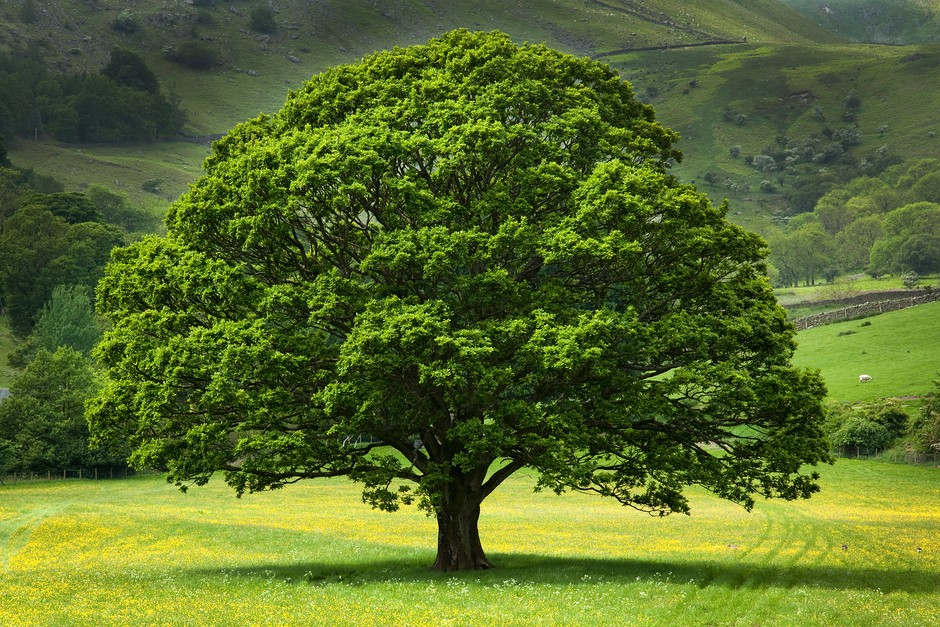
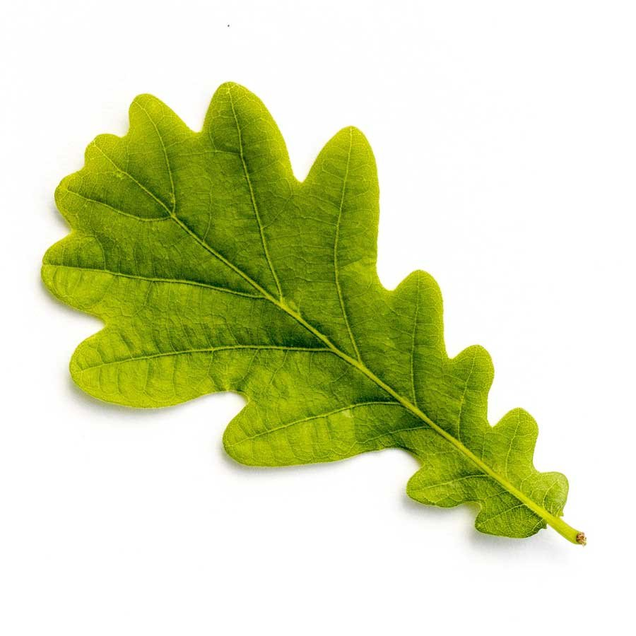
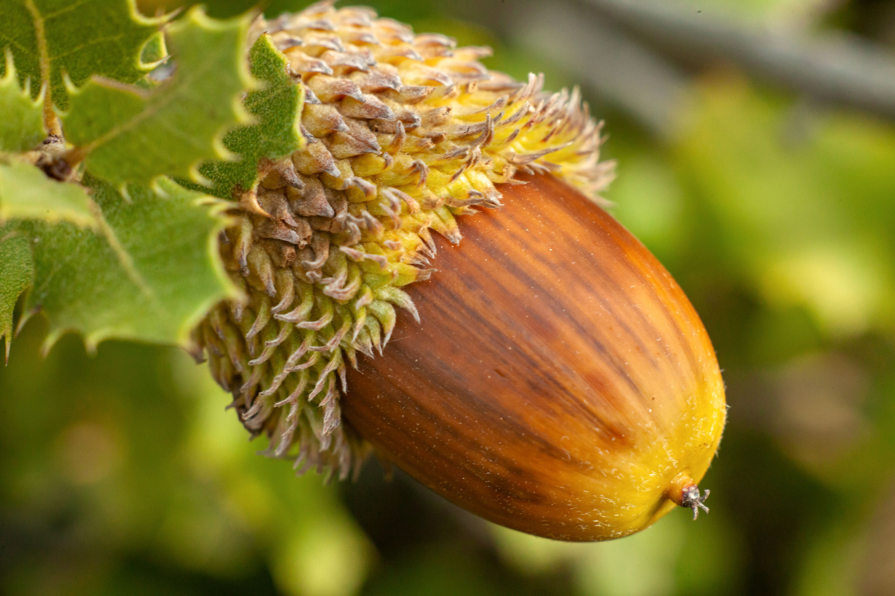
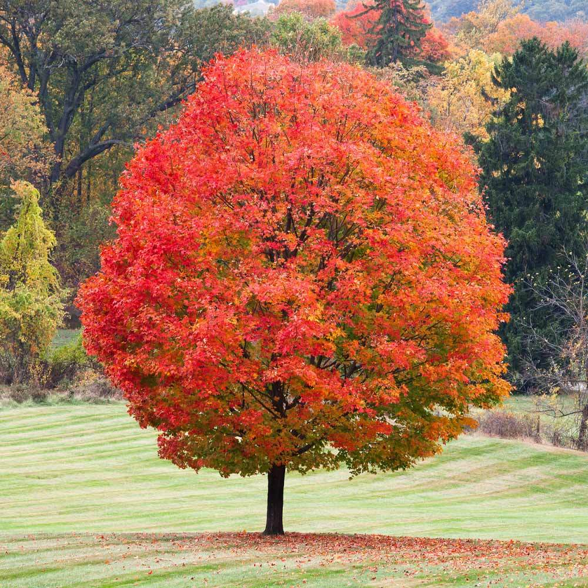
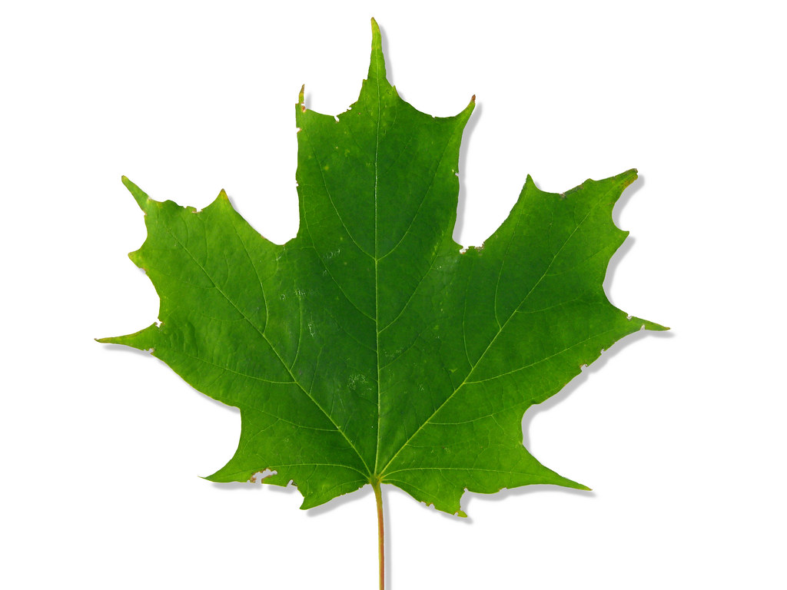
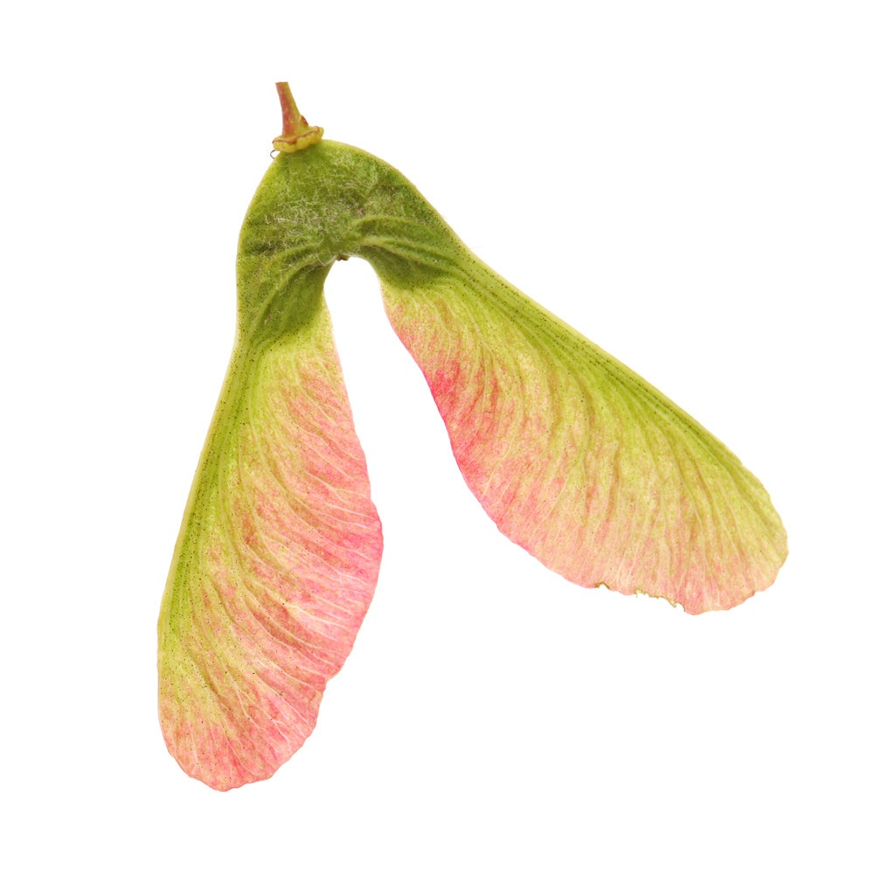
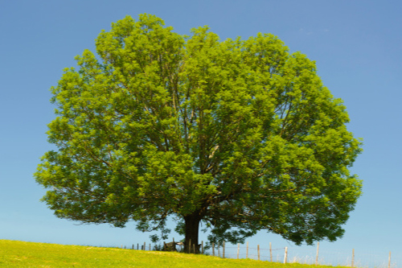
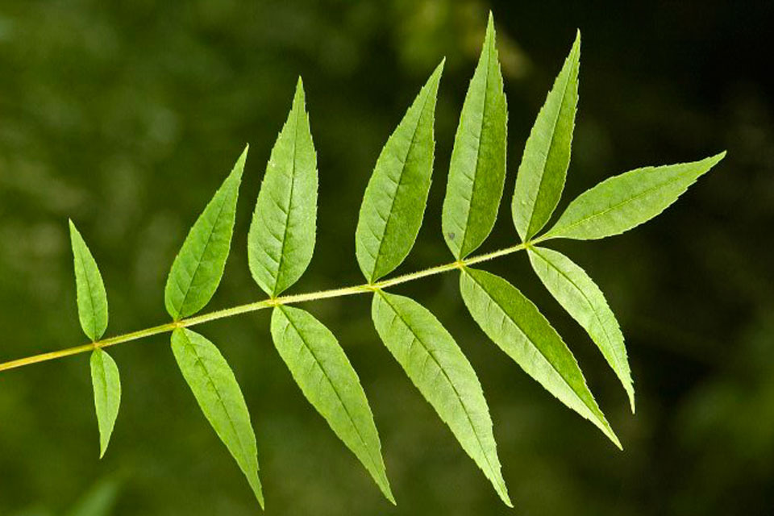
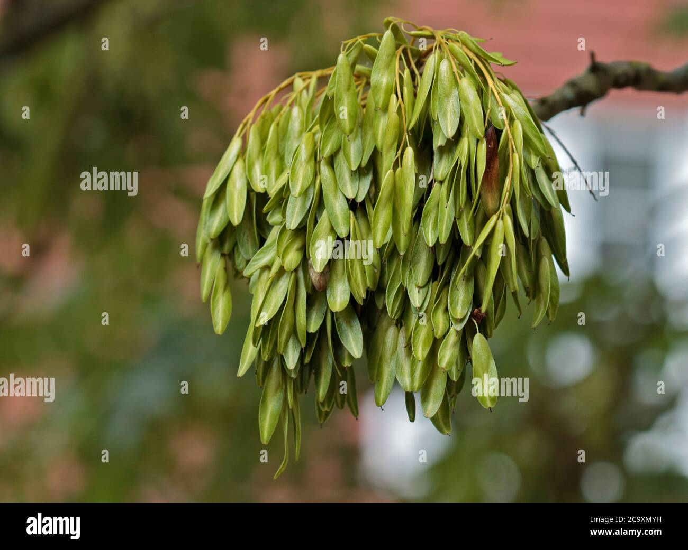

How to identify trees?
All trees have clues and features that can help with identification. You just need to know what to look out for. This quick guide to tree identification will give you a few basic hints and tips.

All trees have clues and features that can help with identification. You just need to know what to look out for. This quick guide to tree identification will give you a few basic hints and tips.
The UK has at least fifty species of native trees and shrubs, and many more species of introduced non-native trees.
There are lots of features that give you clues to what species it is.
| name: | picture: | leave: | seed: | height: |
|---|---|---|---|---|
| oak |  |  |  | 20-40m |
| maple |  |  |  | 2-12m |
| ash |  |  |  | 35m |